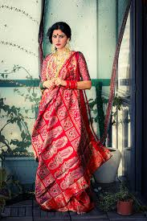

An eminent geographical indication, Baluchari saree find their home in the state of West Bengal.
Baluchari sarees originated in the town of Baluchar in West Bengal, India, almost 200 years ago. They are known for their intricate designs and handwork, and are mainly worn by women in India and Bangladesh. The sarees are handwoven in Bishnupur, Bankura, and are now produced in Bishnupur and its surrounding areas
Baluchari sarees are handwoven using traditional jacquard weaving techniques. The design is drawn on graph paper, colored, and punched into cards. The cards are then sewn together and fixed into the jacquard machine. The weaving process takes five to six days, with two weavers working on a shifting basis
